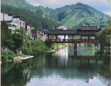
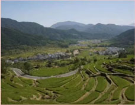
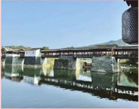
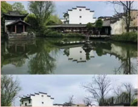

宜 春一年四季在宜春
三清山风景区有“小黄山”之称,因玉京、玉虚、玉华三座山峰而得名。在这里可以观看美丽的云海☁️日出，欣赏山间惟妙惟肖的奇石，还能走上高空栈道赏景。
.
“不识庐山真面目，只缘身在此山中”。走进庐山，就如同走进一段云烟的梦幻，我们看到的只是庐山的一峰一岭一丘一壑，却不能辨认庐山的真面目。

“唐朝时期，因为景德镇在 昌江之南 ，故又称昌南镇,到了宋真宗景德元年 （1004年），因镇产 青白瓷 质地优良，遂以 皇帝年号为名置景德镇 ，沿用至今。
.

江岭，位于婺源县东北部，距县城45公里，总面积38平方公里，每当春暖花开时，置身于江岭万亩梯田中，黄灿灿的油菜花与远山、近水、粉墙、黛瓦相映成趣，构成一幅天人合一的画卷，在这里您可以尽情的释放，让心灵自由飞翔。
上 饶中国经典山水，世界遗产名城
如果你错过了这里的春天，那一定不能再错过这里的秋天，人间烟火抚人心。篁岭一晒，便已知秋。

彩虹桥，是古徽州最古老、最长的廊桥，被众多媒体誉为“中国最美的廊桥之一”。 彩虹桥的魅力，不仅在于桥体与青山、碧水、古村、驿道的完美结合，而且更重要的体现在建造的生命力
“天青色等烟雨，而我在等你”。这里犹如世外桃源一般，来这里看看千年的瓷宫，听一听这里的故事。

古镇江湾，位于锦峰绣岭、清溪碧河之中。聚落北部后龙山逶迤东去，山上林木葱郁，其“仙人桥”是古人实践风水理论的杰出典范